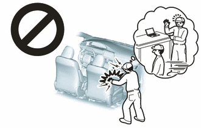
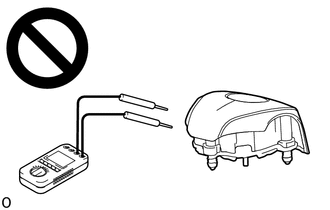
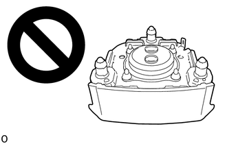

| Last Modified: 10-07-2025 | 6.11:8.1.0 | Doc ID: RM100000002GS7J |
| Model Year Start: 2024 | Model: Tacoma | Prod Date Range: [12/2023 - 03/2024] |
| Title: SUPPLEMENTAL RESTRAINT SYSTEMS: AIRBAG SYSTEM: PRECAUTION; 2024 MY Tacoma Tacoma HV [12/2023 - 03/2024] | ||
PRECAUTION
CAUTION:
- Failure to carry out service procedures in the correct sequence could cause SRS parts to unexpectedly deploy and possibly lead to serious injuries. Furthermore, if a mistake is made when servicing SRS parts, they may fail to operate when required. Before performing servicing (including installation/removal, inspection and replacement of parts), be sure to read the following precautions.
- Be sure to perform initialization of the airbag
ECU assembly under any of the following conditions.
If initialization is not performed, the SRS may not
operate properly.
- The airbag ECU assembly is replaced.
- Accessories (seatback tray, seat cover, etc.) are installed or removed.
- The front passenger seat is removed from the vehicle.
- Any of the bolts that are used to install the front passenger seat are removed and reinstalled.
- The passenger airbag ON/OFF indicator light (OFF) comes on when the passenger seat is not occupied.
- An occupant classification sensor collision detection DTC is output due to an accident or a collision.
(a) Furthermore, if a mistake is made when servicing SRS parts, they may fail to operate when required. Before performing servicing (including installation/removal, inspection and replacement of parts), be sure to read the following precautions.
- Airbag ECU assembly
- Front airbag sensor
- Side airbag pressure sensor
- No. 2 side airbag sensor assembly
- Floor side airbag sensor
- Horn button assembly
- Lower No. 1 instrument panel airbag assembly
- Lower No. 2 instrument panel airbag assembly
- Instrument panel passenger without door airbag assembly
- Curtain shield airbag assembly
- Front seat airbag assembly
- Front seat inner belt assembly
- Front seat outer belt assembly
- Rear seat outer belt assembly
PRECAUTION FOR DISCONNECTING CABLE FROM NEGATIVE AUXILIARY BATTERY TERMINAL
(a) When troubleshooting the SRS, always check for DTCs before disconnecting the cable from the negative (-) auxiliary battery terminal.
(b) After turning the ignition switch off, disconnect the cable from the negative (-) auxiliary battery terminal.
NOTICE:
After the ignition switch is turned off, there may be a waiting time before disconnecting the negative (-) auxiliary battery terminal.
Click here
![2024 - 2026 MY Tacoma Tacoma HV [12/2023 - ]; SETUP: WHEN DISCONNECTING OR RECONNECTING BATTERY TERMINAL: BEFORE DISCONNECTING BATTERY](../../../../stylegraphics/info.gif)
(c) Before starting work relating to the SRS airbag system, fitting adjustment of the front/rear doors and removal, installation or replacement of parts near the airbag sensors, wait for at least 60 seconds after disconnecting the cable from the negative (-) auxiliary battery terminal.
CAUTION:
The SRS is equipped with a back-up power source. If work is started within 60 seconds of disconnecting the cable from the negative (-) auxiliary battery terminal, the SRS parts may deploy.
HINT:
When disconnecting and reconnecting the negative (-) auxiliary battery, there is an automatic learning function that completes learning when the respective system is used.
Click here
GENERAL PRECAUTION
(a) Information labels are attached to the SRS parts. Follow the instructions on the labels.
(b) Never disassemble or attempt to repair any of the SRS parts.
(c) If any of the SRS parts are dropped, or if any cracks, dents or other defects are found, replace them with new parts.
(d) Never use airbags and pretensioners from another vehicle. When replacing parts, use new parts.
(e) Do not expose any of the SRS parts directly to high temperatures or flames.
(f) If the vehicle has been involved in a minor collision where the SRS did not deploy, the airbags and pretensioners should be inspected before further use of the vehicle.
(g) Do not apply grease, detergent, oil or water to the SRS parts. If applied, immediately wipe it off with a dry cloth.
(h) When deploying or storing the SRS parts, avoid places with a high temperature and high humidity, and keep them away from electrical noise.
(i) Do not stack or place anything on top of the airbags and pretensioners.
CAUTION:
Dispose of the airbags according to the disposal procedures for each airbag.
(j) Never measure the resistance of the airbags and pretensioners.
CAUTION:
Never measure the resistance of the airbags and pretensioners because current from the tester may cause the airbags and pretensioners to deploy.
(k) Use a voltmeter/ohmmeter with high impedance (minimum = 10 kΩ) for troubleshooting electrical circuits.
(l) Be sure to check the SRS warning light and multi-information display after checking, removing and installing, or replacing the airbag and sensor.
PRECAUTION FOR AIRBAG ASSEMBLIES
(a) Keep the deployment side of an airbag facing upward even when the airbag is temporarily removed during service.
CAUTION:
Always place a removed or a new airbag with the deployment side facing upward. Placing the airbag with the deployment side facing downward could cause a serious accident if the airbag deploys.
(b) When storing the airbag, do not place anything on top of the airbag or pile up airbags.
PRECAUTION FOR FRONT SEAT OUTER BELT ASSEMBLY (PRETENSIONER) AND REAR SEAT OUTER BELT ASSEMBLY (PRETENSIONER)
(a) Do not touch the area around the retractor even when the front seat outer belt assembly or rear seat outer belt assembly is temporarily removed during service.
CAUTION:
If the pretensioner unexpectedly deploys and the front seat outer belt assembly or rear seat outer belt assembly is retracted during an operation, it could cause a serious accident.

(b) When storing the pretensioner, do not place objects on top of the pretensioner or pile up pretensioners.
PRECAUTION FOR SPIRAL CABLE SUB-ASSEMBLY
(a) Do not replace the spiral cable sub-assembly with the auxiliary battery connected and the ignition switch ON.
(b) Do not rotate the spiral cable sub-assembly without the steering wheel assembly installed, with the auxiliary battery connected and the ignition switch ON.
(c) Ensure that the steering wheel assembly is installed and aligned straight when inspecting the steering sensor.
(d) When rotating the spiral cable sub-assembly, make sure to push on the interlock to release the interlock mechanism.
(e) Do not remove the steering angle sensor from the spiral cable sub-assembly without using the lock pin, as this may shift the center point of the steering angle sensor.
(f) Be sure that the spiral cable sub-assembly is in the neutral position during installation and when removing and installing the steering wheel assembly.
NOTICE:
If the steering wheel assembly is turned without the spiral cable sub-assembly installed in the neutral position, the cable may break.
PRECAUTION FOR AIRBAG ECU ASSEMBLY AND AIRBAG SENSORS
(a) When the airbags and pretensioners are deployed (including when only an airbag or pretensioner is deployed) due to a collision, be sure to replace all sensors in the damaged areas (anywhere in need of repair) and the airbag ECU assembly.
(b) Visually check the airbag sensors in undamaged areas for defects.
(1) The defects are as follows:
- Cracks in the sensor housing
- Dents in the sensor housing
- Chips in the sensor housing
- Cracks or other damage to the connector
- Damage to the serial number (except side airbag pressure sensor)
(c) When removing and installing the airbag ECU assembly, front airbag sensor, side airbag pressure sensor, floor side airbag sensor and No. 2 side airbag sensor assembly connectors, be sure to perform work with the sensors installed to the vehicle.
(d) Do not use a sensor if dropped during operation.
(e) Do not use a sensor if subjected to any strong impact.
(f) Never disassemble any of the SRS parts.
PRECAUTION FOR SIDE AIRBAG PRESSURE SENSOR
(a) Do not make any modifications to the front door that may change the inner pressure of the front door.
(b) Do not allow any foreign matter to enter the side airbag pressure sensor as it may affect the pressure detection performance of the sensor.
(c) When painting the front door, remove or apply protective tape to the side airbag pressure sensor to prevent paint from attaching to it.
(d) Make sure that the parts which maintain the sealing performance of the front door are securely installed. If the sealing performance of the front door decreases, the pressure detection performance of the side airbag pressure sensor may be affected. Repair or replace parts as necessary.
PRECAUTION FOR WIRE HARNESS AND CONNECTOR
(a) All wire harnesses except unexposed harnesses in the motor compartment are colored yellow.
(b) As special connectors are used, be careful when handling them.
PRECAUTION FOR DAMAGED VEHICLE
(a) Before using an electric welder on the vehicle, remove any airbags and pretensioners around the area being repaired.
(b) Before repairs, remove the airbag ECU assemblies if impacts are likely to be applied to the sensor during repairs.
(c) Never expose an airbag sensor directly to high temperatures.
(d) As the airbags and pretensioners are very hot after being deployed, ensure that all wire harnesses and connectors around deployed SRS parts are not damaged.